The world is in a crisis, currently dealing with a global pandemic in the form of COVID 19. The spread of COVID 19 in the whole world has put humanity at risk. The resources of some largest economies are stressed out by the large infectivity and transmissibility of this disease. The growing number of cases has caused stress on administration and health professionals, so some prediction methods would be required to predict the numbers of cases and factors that cause an increase in cases. So we aim to use a predictive model to analyze the historical data and also predict the future case. For prediction, we use regression and time series models based on time series data. The increase in cases is due to the temperature change. Temperature changes with seasons. So COVID 19 is going up or down depending on different factors. This model has done an exploratory analysis of data and predicts the number of confirmed cases. In this project, we analyzed various methods for the prediction of COVID cases and compared the results so the best fit model with higher accuracy is used for prediction. So this project presents the prediction of the number of cases and factors that are suitable for an increase in COVID 19 cases so that it will help in providing future safety to the people all over the world and control the spread of the pandemic.
The 2019 Coronavirus pandemic, also known as COVID-19, is a contemporary occurrence that necessitates data collection, compilation, modelling, and forecasting in order to fully comprehend the pandemic's consequences. Many organisations were collecting the necessary COVID-19 data at the start of the pandemic. These organisations, which included hospitals, state and national health authorities, universities, and other research groups, have been collecting data since the pandemic began and have been sharing it with other organisations on a regular basis. The COVID-19 pandemic poses a significant challenge to governments, citizens, and the health-care industry because the disease's transmission is influenced by numerous elements, both known and unknown. As additional data becomes available, modelling methods can be used to discover critical data and utilise it to forecast or confirm ideas that might help health and government institutions plan for the pandemic's hazards. The project involves numerous variables that can be gathered over time, such as location, temperature, and so on. As a result, we'll have multivariable time series data to work with. We will also cleanse, standardize, synchronize, and synthesize the data in a homogeneous way as we get more data from a variety of sources to construct a workable model. Finally, the project's purpose is to model the data in order to provide real-time analysis based on an accurate model.
In the aftermath of COVID-19, it has become considerably more challenging and crucial, since cases have increased dramatically. It is critical to evaluate what the future holds and what actions everyone can take. Forecasting cases can help guide public health decision-making by projecting the likely effects of the COVID-19 pandemic in the next weeks. Understanding the causes that cause the increase in COVID-19 can also help people better comprehend the triggers. They can also avoid areas where there is a risk of transmission. In the subject of COVID-19 prediction, there is a lot of research going on. In our study, we want to forecast the number of cases and the factors that influence the number of cases in the future.
Dataset Description:
Datasets used and their selected features: This project utilizes four distinct data sets focused on COVID-19 confirmed cases, deaths, recovered cases, global temperatures.
covid_19_clean_complete: Province, Country, Lat , LONG, Confirmed, Deaths, Recovered Time_series_covid_19_confirmed_US:Province,Country, No_of_Confirmed_cases_by_date Time_series_covid_19_Deaths_US: Province,Country,No_of_Deaths_cases_by_date Time_series_covid_19_Recovered: Province,Country,No_of_Recoevred_cases_by_date GlobalTemprature: LandAverageTemperature, LandAverageTemperatureUncertainty
Data Cleaning:
To clean our varied data sets, we performed multiple procedures. To make our data more compatible with various sorts of data mining tools, we made some basic initial changes such as standardizing, capitalizing, and replacing spaces with underscores. The dataset 'covid 19 clean complete', which is the largest, received a lot more cleaning effort. Using the excel VLOOKUP tool, we separated the temperature dataset into various datasets based on city, state, and nation, which will aid us in developing better visualizations in the future using matplotlib.
Several attributes in this dataset had missing values. We experienced difficulty recovering missing values when dealing with missing values. As a result, we used the built-in R function geopy() to treat missing characteristics (latitude and longitude) in the dataset with the help of 'WHO Region,' which is vital data for our project aim. In terms of other characteristics, we
Because the dataset already has 11,000+ rows, we opted to discard the rows with missing values. We imported the data into MySQL and utilized queries and functions to get all non-empty rows. We removed columns that were no longer needed and would be unused data as part of the cleaning process. To remove the columns from the entire dataset - 'time series covid 19,' we utilized Python's drop() function.
Table which gives country wise total defined cases and showing top 10 countries.
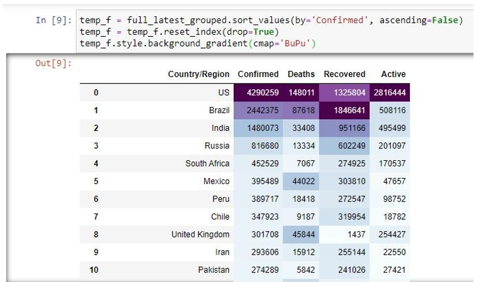
This is a progression of COVID 19 cases spread graph over time. The radius of the circle represents the number of cases and the colors indicate intensity of cases.
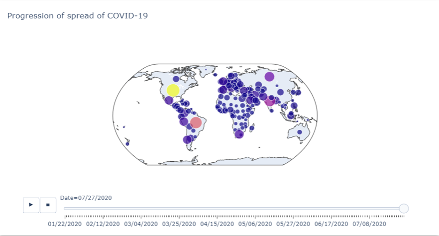
This visualization represents the number of confirmed cases worldwide (focussed on US).
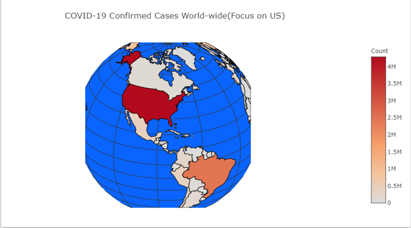
We have considered 4 autoregression methods to predict future values of confirmed COVID-19 cases
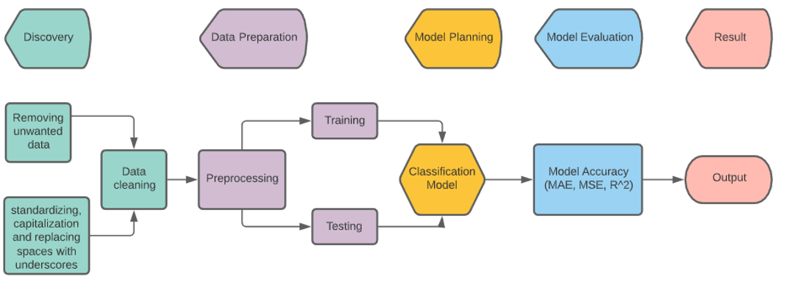
Support Vector Machine: It is well-known for its classification's discriminative power. By maximizing the data between data clusters, this training technique constructs a model by discovering a hyperplane and accurately classifies data.
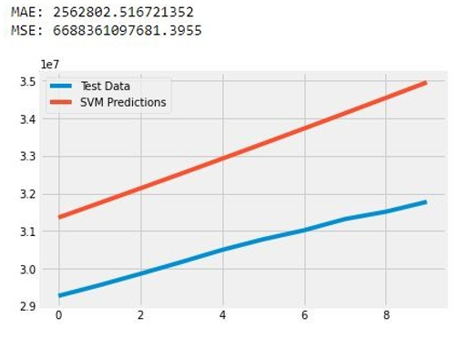
Bayesian Ridge Regression: We use probability distributions instead of point estimates to formulate linear regression from a Bayesian perspective. The answer, y, is assumed to be drawn from a probability distribution rather than being calculated as a single value. The purpose of Bayesian Linear Regression is to identify the lateral distribution of the model's parameters, not to select a single "best value" of the model's parameters.
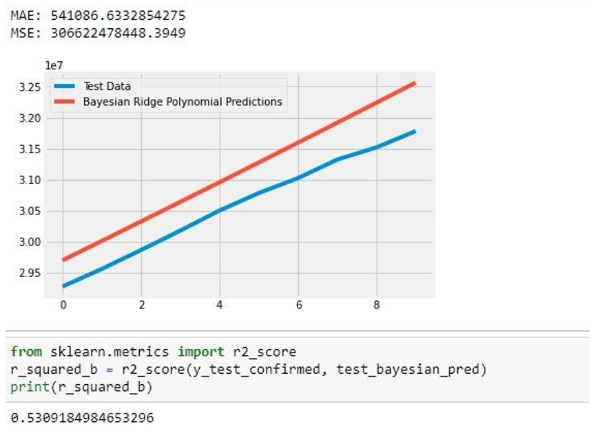
Linear Regression: This section presented how to model the relationship between a scalar answer and one or more explanatory variables using a linear method.
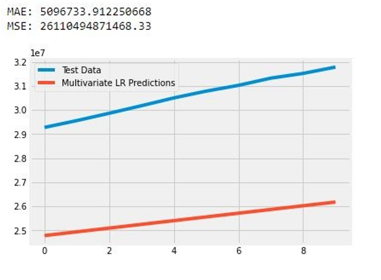
Polynomial Regression:
The independent variable x is modelled as a 4th degree polynomial in x, while the dependent variable y is described as a 4th degree polynomial in y.
Polynomial regression is a variant of linear regression in which we fit a polynomial equation to the data with a curvilinear relationship between the target variable and the independent variables.
In a curvilinear connection, the value of the target variable varies non-uniformly with regard to the indicator (s).
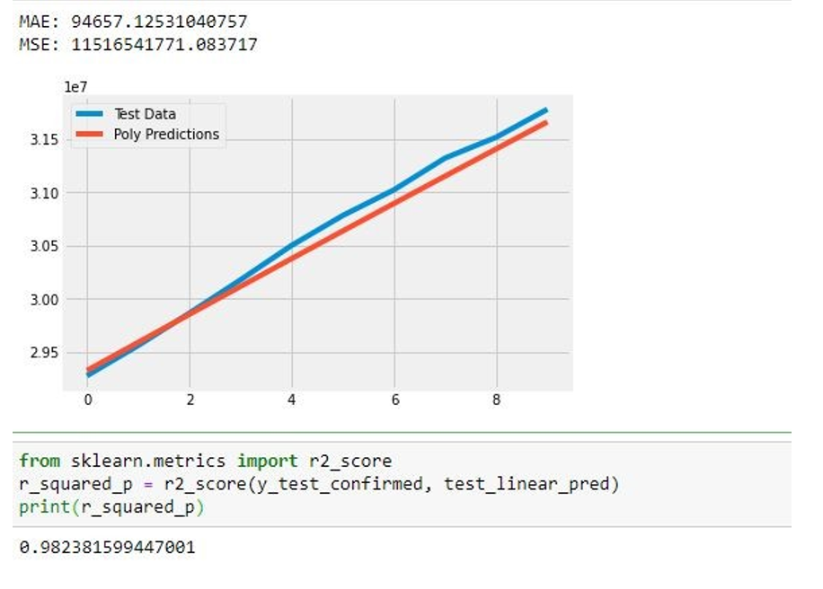
Comparing the parameters MAE, MSE and R2 for all the four methods, we observe that the polynomial regression is best fit for our dataset. The reason is that the mean absolute error is less and the coefficient value is higher than other methods[5].
Table1: This represents the comparison of the various parameters of methods we used to train the model on our dataset.
The temperature plays a major role in transmission of the covid which can be observed with the below choropleth globe visualization[3]:
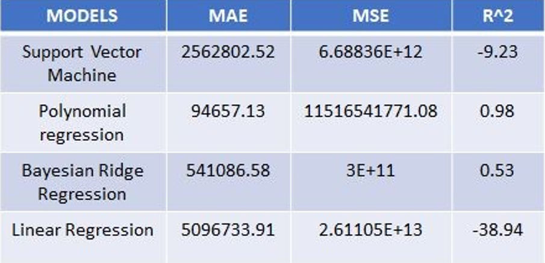
Forecast of number of cases using autoregression(polynomial regression) model
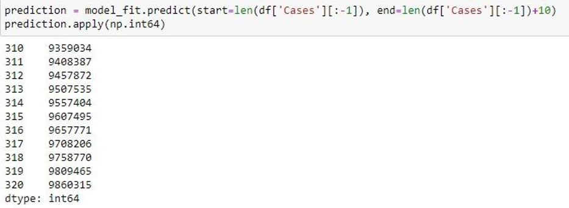
Number of confirmed cases from 8th december 2020 to 12th december 2020.
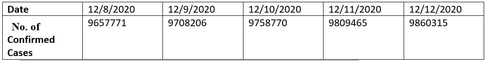
The confirmed and recovered cases are plotted against the date in this graph. This is a range slider type of graph which compares the number of confirmed and recovered cases over time.
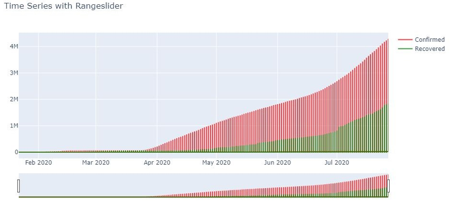
With data analytics and data mining perspectives, information and communication technology aids in the decision-making process based on historical data. The amount of data accessible is enormous, and acquiring information and making predictions from it is a difficult undertaking. So, using the existing COVID dataset, several methods are applied to the data in order to determine the best accurate approach by varying the MSE, MAE, and R2 parameters. Polynomial Regression is the best approach for predicting instances among other ways since its mean absolute error (MAE) is lower than other methods and R square (coefficient of determination) is near to one. So, for case prediction, chose Polynomial Regression as the best fit model.
The project's future goals include developing and implementing error-correcting algorithms to improve model predictability and accuracy. We can detect and accumulate a new set of flaws within the models while analyzing current and new data with different models, such as Bayesian Ridge Regression, Linear Regression, Polynomial Regression, and so on. We can estimate this error and remove it to construct a more accurate model if the error terms are correlated between each iteration of the model. As we acquire fresh data and the model is updated, this future version of the model with built-in error-correcting mechanisms will be an ongoing process. Our current best model employs the MAE, MSE, and R2 approaches to determine the best model, however an updated model that incorporates error-correcting methods would improve the goodness-of-fit while lowering the model's errors. As a result, our The goal for the future is to create and implement error-correcting strategies to improve model predictability and accuracy.